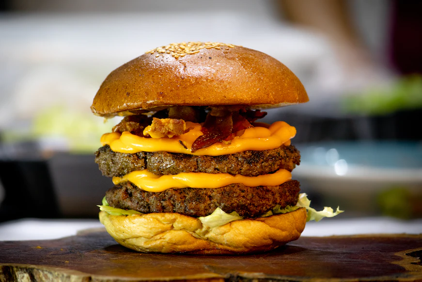

Hambúrguer

Ingredientes
- 1 Kg de carne moída (de preferência patinho)
- 1 Cebola media picada
- Cebolinha a gosto
- Orégano a gosto
- 1 Sachê de creme de cebola
- 4 Dentes de alho picado
- Sal a gosto
- Pimenta a gosto
- Pão de Hambúrguer
Modo de Preparo
- Misture todos os ingredientes, amasse bem e forme bolinhas, depois achate para ter a forma de hambúrguer.
- Frite numa frigideira antiaderente, coloque uma colher de óleo pois a carne não tem gordura.
- Coloque o hambúrguer dentro do pão, e adicione aquilo que for do seu agrado.